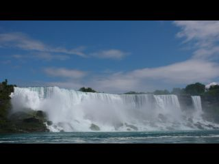
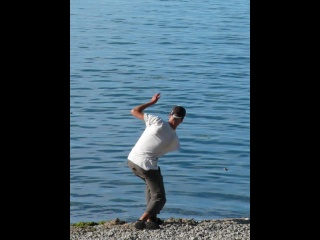
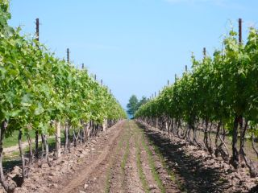
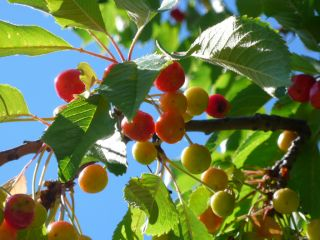
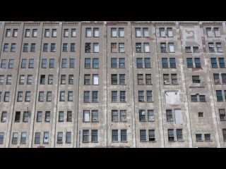
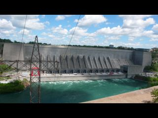
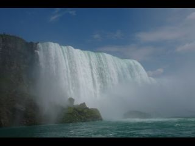
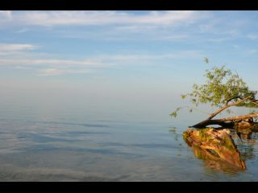

Friday, July 3, 2009 7:48:59 PM
Nous voyagions avec nos 3 amis Wim, Hanlie et Dereck. En arraivant dans une petite ville du Kentucky, je demande à une dame si l'on peut mettre nos tentes pour la nuit sur un carré de pelouse en face de chez elle. Elle me le déconseille car le terrain appartient à une école et qu'ils risquent de nous chasser à l'aube, mais nous propose de les planter sur sa pelouse.
Nous dinons ensemble sous l'abris d'un stade municipal. Francis cherche les toilettes municipales dont la dame nous a parlé. Il essaye une porte mais elle est fermée : ce ne doit pas être là. Tant pis, il abandonne.
Le lendemain, un policier vient poser des questions à nos amis sud-africains. Ils leur demande ce que nous faisions la veille près du stade. Des gens nous ont vu et ont signaler notre presence a la police. Il repart, satisfait des reponses donnees. "De toute les facon c'est un espace public, je n'ai rien a vous reprocher".
Puis il revient un quart d'heure plus tard. Nos amis sud-africains lui font coucou, mais il leur dit que ce n'est pas à eux qu'il souhaite parler, c'est au grand la-bas. Il vient voir Francis et lui demande pourquoi il a essayé de rentrer dans la maisonnette près du stade. Francis répond qu'il cherchait des toilettes. Le flic réplique que cette maisonnette est une propriété privée, que quelqu'un l'a vu tenter d'ouvrir la porte et l'a appelé. Francis dit qu'il a juste tourné la poignée et qu'il est parti en voyant que c'était fermé.
Le flic termine en disant qu'il est gentil et qu'il accepte de nous croire pour cette fois, mais qu'il faut qu'on fasse attention car il aurait pu tirer sur Francis pour avoir tente d'ouvrir cette porte.
Du bluff bien sur..., mais pas rassurant !

Monday, June 29, 2009 9:05:53 PM
Mennonites, cyclotourisme, Afrique du Sud, rencontres
Le terme états-uniens est certes très moche, mais il me paraît maintenant difficile d'appeler ces gens les Américains. Et les Chiliens, les Mexicains, les Canadiens ... ?? Ils sont américains aussi, non ?
Bon. Une première rencontre intéressante : Linda et JC. J'attends devant le Walmart de Fulton (Mississippi) quand Linda s'approche de moi, me demande ce que je lis, puis m'invite à dormir chez elle. Je note son adresse (c'est juste à côté).
Quand Francis sort du supermarché tout chargé de denrées, je lui explique le deal. Il est partant et nous achetons vite une plante en pot (le vélo de Francis commence à ressembler à un train indien ou à un camion poubelle napolitain, comme vous préférez). Puis nous filons (tant bien que mal) chez Linda. Elle nous présente son mari, JC, très préoccupé par un petit poussin qui n'est pas au mieux de sa forme. Nous visitons ensemble leur grande maison quand JC nous demande si nous sommes croyants. Je dis que je suis catholique, et Francis explique qu'il est athée. JC réplique qu'il aura donc avec nous une petite conversation.
JC nous demande ensuite si nous sommes mariés. Nous répondons que nous sommes fiancés, et Linda nous montre alors nos deux chambres, séparées. Oups ?!

Ceci étant fait, JC nous fait une démonstration de son équipement de chasseur de dindes sauvages. C'est très drôle de le voir camouflé, avec ses vêtements pleins de feuilles, et en train de pousser des petits cris censés imiter l'appel de la femelle. Il nous montre ses trophées de chasse : les barbes des dindes qu'il a tuées. Il y en a moultes. La taille de la barbe augmente avec l'âge, et l'on n'est pas censé tuer des jeunes, mais il y a tout de même quelques petites barbes dans la boîte. Il nous explique que les quotas dans le Mississippi sont de 3 dindes par an et par chasseur. Mais l'année dernière il en a tué 7 : une fois 2 en un tir, une autre fois 3, et une au Tennessee !
Après avoir bien ri, c'est l'heure de la petite discussion.
Linda nous apporte de quoi dîner, et une bible. Et là, JC tente une démonstration de la véracité des écrits bibliques, de l'existence de Jesus, de Dieu et de l'enfer qui attend les brebis égarées comme nous. Il nous fait lire alternativement des passages de la Bible. C'est assez intéressant à voir, mais Francis se sent très mal à l'aise. Linda s'en rend probablement compte car elle demande a JC de passer à la fin de sa démonstration. Nous prétextons la fatigue pour échapper à la fin du discours.
Le lendemain matin, JC nous emmène petit-déjeuner au restaurant, et évite toute allusion biblique. Je pense qu'il s'est pris quelques reproches de sa femme.
Il nous dit juste qu'il a planté la petite graine. Je ne suis pas sûre qu'elle va pousser.
En partant, JC nous a donné quelques prospectus et les deux premières lessons de son mouvement, nommé "Back to the Bible". Parce qu'il existe trop de confessions chrétiennes, celle-ci se veut rassembliste et plus proche des textes bibliques.
Nous refusons une bible : nous sommes assez chargés.
Puis nous quittons nos hôtes, adorables mais un peu trop entreprenants.
Nous passons les semaines qui suivent à parler religions, et philosophie.
Deuxième rencontre : des cyclotouristes, Derek, Hanley et Wim.

Derek est un jeune Canadien de 22 ans. Il est parti de Vancouver il y a un peu plus d'un an, abandonnant son poste dans une scierie. Son frère l'a suivi à la dernière minute. Et ils sont partis tous les 2 avec pour objectif d'atteindre le sud des Etats-Unis en descendant la côte Ouest. Ce faisant, Derek est devenu accroc et a continué jusqu'au Mexique, qu'il a traversé en 7 jours, et au Guatemala. Ayant un vélo droit de route, il a été confronté à l'omniprésence des pistes en Amerique centrale, et a décidé de repartir vers le Nord. Il a suivi la Underground Railroad avec nous et nous a quitté peu avant Cincinnati, en direction de Boston, puis Halifax et Vancouver. Ce drôle de garçon se nourrit de haricots rouges en boîte à tous les repas, généralement froids et directement dans la boîte pour gagner du temps. Depuis qu'on l'a rencontré, je lui ai appris à faire de la purée en sachet. Et Derek alterne maintenant "beans" et purée.

Il aime pédaler doucement avec d'autres, mais quand il pédale seul, il va "stupid fast". Ainsi son premier voyage a vélo totalisera plus de 30000 km en un an et demi. Et il ne compte pas s'arrêter là. Selon nous, c'est un grand espoir du cyclotourisme. A noter, le tatouage qu'il a sur l'avant bras droit...Quand on vous dit que ce gars la est serieux !
Wim et Hanley sont sud-africains et parlent donc l'afrikaans. Nous n'avons pas retenu grand chose de nos leçons, sauf 2 expressions : " laka bru" ("c'est cool mon pote") et "bak ballas" (litéralement "se les dorer au soleil", en pratique "profiter du bon temps").


Wim vient d'une famille nombreuse et n'a pas pu aller à l'université, car il n'y a pas vraiment de système d'éducation (ou de santé d'ailleurs) public en Afrique du Sud ; les universités coutent donc très cher. Il est informaticien "bases de donnees" autodidacte, a travaillé entre autres à Téhéran 6 mois et à Londres 1 an pour des compagnies de téléphonie mobile. Il aimerait créer sa propre entreprise en rentrant en Afrique du Sud.

Hanley a un diplôme d'enseignante mais ne souhaite pas enseigner. Elle a travaillé dans le domaine de l'édition et souhaiterait écrire des romans. Elle a déjà publié quelques nouvelles en afrikaans dans des revues.
Nous avons appris beaucoup de choses sur l'Afrique du Sud grâce à eux. Apparemment, l'insécurité est un gros problème actuellement. Dès que les habitants ont assez d'argent, ils se font construire un grillage électrifié autour de leur maison. Le vote des Noirs a été accepté par référendum en 1993 et les premières élections au suffrage universel ont eu lieu en 1995 !!
Wim et Hanley ont connu la ségrégation, avec les écoles pour blancs, les plages pour blancs, les toilettes pour blancs... Apparemment, le gouvernement a introduit des quotas pour que les Noirs aient accès aux emplois, mais n'a pas créé en parallèle un système d'éducation pour tous. Du coup, les patrons se doivent d'employer des Blacks, mais ceux-ci ne sont souvent pas qualifiés, et ça ne marche donc pas. Ils les renvoient les uns après les autres. Du coup il y a beaucoup d'instabilité et de pauvres.
Ils ont introduit des lois interdisant les propos à caractère raciste, et il y a apparemment de nombreux procès. Dans les campagnes et chez les anciennes générations, les pensées racistes sont encore monnaie courante. Les blancs se font parfois encore appeler "Mister", alors que c'est théoriquement interdit.
Les jeunes espèrent des jours meilleurs mais beaucoup fuient. La soeur de Wim a fuit en Australie après qu'un cambrioleur soit venu piller sa maison de nuit et ait demandé à ses enfants où était la chambre des parents en poitant une arme sur eux. La petite a répondu, et elle fait des cauchemards depuis, car elle a cru que l'homme allait tuer sa mère, et qu'elle en était responsable.
Espérons que tout cela s'arrange !
Avec Hanley et Wim, nous sommes allés presque jusqu'au lac Erie. Puis ils nous ont quitté car ils devaient rentrer sur Londres puis en Afrique du Sud.

Nous avons passé de bons moments ensemble, et ces 3 compagnons de voyage nous ont aussi redonner de la pêche : au Chili nous nous étions habitués à pédaler 50 km par jour (et encore), avec eux nous avons grandement accéléré le rythme. Ca n'a pas toujours ete facile, car nous etions largement plus charges qu'eux.
Merci les amis. Et à la prochaine.

Nous avons croisé avec nos 3 amis sur une piste cyclable de l'Ohio Dan et Elsie. Le soir, comme nous finissions d'installer nos tentes sur une pelouse (avec l'aval du policier local), Dan et Elsie reviennent en voiture et nous offrent leur "cabin", leur maison de vacances, qui se trouve au bord d'un lac à une trentaine de kilomètres de là où nous sommes. Nous ne nous faisons pas prier et acceptons quasi immediatement. Nous apprenons le lendemain que Dan est né et a grandit dans une famille amish. Puis il a choisi de "sauter par dessus la barrière" ("he jumped over the fence") pour devenir Mennonite, le courant chrétien anabaptiste dont proviennent les Amish.

Les Mennonites prônent aussi une vie plus simple, et des valeurs familiales et amicales, mais sont beaucoup moins opposés au changement et aux technologies. La preuve, Dan et Elsie ont 2 grosses 4x4, une grande maison et leur "cabin" avec l'électricité. Vue la taille de la pelouse, ils ne doivent pas tondre manuellement. Et Dan dirige une entreprise de bâtiment. Il semble avoir gardé des contacts avec les communautés amish car c'est lui qui a construit le restaurant amish local (très bon et pas cher) et il a fait construire sa "cabin" par des ouvriers amish. Le résultat, tout en bois, est magnifique.
Notre après-midi de repos fut fort agréable.
Nous avons rencontré beaucoup d'autres personnes adorables aux Etats-Unis, entre autres la famille Eckler à Cincinnati, la famille French à Evansville, Wendell à Medina (ancien professeur de français et maintenant dentiste), la famille Simeral à Hiram...
Tous des gens très differents et adorables.Vive les voyages et vive les rencontres !
Saturday, June 27, 2009 11:00:52 PM
Alors que nous étions chez McDo, Hélène me demande d'aller lui chercher un café. Si possible un expresso noir sans sucre. Si possible parce qu'aux Etats-Unis, un café c'est 30cl, toujours sucré et souvent au lait.
Mais chez Mcdo, ils ont une machine à Expressos pour faire les mochas ou autres capuccinos.
Alors je tente.
"Un expresso s'il vous plaît".
Le caissier fronce les sourcils, genre je lui ai commandé un big Mac à la grenouille.
"vous voulez dire un shot d'expresso sans sucre et sans lait ?"
"oui"
"une seconde s'il vous plaît"
Et il va voir le manager. Ça papotte, ça me montre du doigt, ça lève les mains au ciel. Le manager vient me voir et me demande de confirmer que je veux bien un café noir sans sucre. Finalement il donne son accord en me prévenant que le goût sera probablement très fort et amer.
L'employé hésite longuement car "Expresso" ne fait pas partie des choix qu'il peut cocher sur le gobelet. Il finit par cocher "autre".
Il va à la machine et y reste quelques bonnes minutes. Je me penche pour regarder ce qu'il fait : il est en train de remplir tout le gobelet de 30cl en mettant expresso sur expresso !
Je lui dis que les 2 tiers suffiront amplement. Ça le soulage visiblement "j'me disais, vous alliez avoir du mal à dormir avec ça ..."
Cet après-midi là, Helene a été dure à suivre sur la route.
Wednesday, June 24, 2009 11:21:33 PM
Ontario, chutes, Niagara, New York
...

Nous venons juste de quitter Niagara Falls, et Francis a encore un pneu crevé. Celui de l'avant cette fois. Il y a 2 jours, c'était le pneu arrière. Il faut croire qu'ils commencent à être usés. Pourtant on les a changés il y a 4 mois, mais la Carretera Australe a probablement accéléré le vieillissement. On va essayer les antioxydants.
Moi, je m'en sors bien. Presque 12000 kilomètres et toujours une seule crevaison. Je croise les orteils et je touche du chêne.

Bon, on vous a plus ou moins abandonnés en compagnie des amish, c'est à dire en Ohio et Pennsylvanie. Alors reprenons. Une fois arrivés au Nord de l'Ohio, nous avons atteint le lac Erie. Immense. Majestueux quand il fait beau, et mouillé quand il pleut. C'est cette partie des Etats-Unis que nous avons préférée en ce qui concerne les paysages. Les baignades dans le lac, les beaux couchés de soleil, les ricochets,...

Autre chose nous a surpris. Depuis le Kentucky et à travers l'Ohio, on voyait essentiellement des champs de maïs et de blé. Et quand on est passé en Pensylvanie, les vignobles sont apparus soudainement, ainsi que les arbres fruitiers. Côté américain, dans les états de Pensylvanie et New York, les vignes semblaient quelque peu négligées. Depuis que nous sommes dans l'Ontario, les vignes ressemblent plus à ce que nous sommes habitués à voir en France. Pas trop de mauvaises herbes au pied des cèpes, et parfois de beaux rosiers devant.

Nous faisons régulièrement des pauses cerises au bord des routes.
Autant dire que nous sommes revenus a un rythme très patachon ces derniers temps.

A propos des villes que nous avons traversées il n'y a pas grand chose a dire. Sauf que Buffalo ressemble a une ville industrielle touchée par la révolution du tertiaire. Nous avons appris depuis que la construction du canal reliant le lac Erie au lac Ontario a déprimé l'économie de cette ville. On observe donc des immeubles à l'abandon, des terrains vagues, des engins en pleine démolition, et quelques tours dont la hideuse tour HSBC.
En ce qui concerne la ville de Niagara Falls, nous avons été impressionnés par plusieurs choses. La majestuosité des chutes bien sûr. Ensuite l'attraction touristique à outrance en ce qui concerne le quartier touristique de la ville, à proximité des chutes : Sheraton, Hilton, et autres grands hôtels sont tous représentés par d'immenses tours et les rues ressemblent à Eurodisney. Il n'y a que attractions, restaurants, hôtels et casinos dans ce quartier.
C'est comme ça que j'imaginais Las Vegas, mais pas les chutes du Niagara. Pour moi, ce devait être la nature dans toute sa force et sa simplicité : juste de la roche et de l'eau.
Enfin bon, on comprend que tout le monde veuille voir ce site.

Mais il me semble que le gouvernement n'a pas géré au mieux l'intégration environnementale. Les usines claircemées sur tout le côté américain et les barrages en amont, les énormes barrages en béton en aval qui côtoient les falaises boisées. Ça fait bizarre.
Francis a lu sur Wikipedia que l'eau de la rivière Niagara n'est que peu détournée le jour (pour que les chutes soient belles pour les touristes), mais qu'ils en détournent plus de 50% la nuit pour faire de l'hydroélectricité. Apparemment il y a aussi un problème d'érosion (les chutes ont reculé de 11 km depuis leur point d'origine en quelques dizaines de milliers d'années) et les scientifiques craignent que le lac Erie se vide un jour dans le lac Ontario. Donc ils détournent plus d'eau et consolident le lit de la rivière.
Petit detail rigolo, en 1969, ils ont meme "ferme le robinet" des chutes americaines pendant plusieurs mois afin de colmater quelques fissures. Et quand on voit les chutes (2800 tonnes d'eau par seconde), on n'imagine pas qu'on puisse les fermer comme ca !

Bien qu'ultra touristique, nous nous sommes quand meme offert un petit tour en bateau au pied des chutes. Tres impressionant. L'appareil photo est celui qui a le moins apprecie l'aventure, puisque ses lentilles ont mis le reste de la journee a secher.
Tout cela ne doit pas être au goût des Amish !
Mais la région des grands lacs est tout de même très belle.

Saturday, June 20, 2009 7:58:52 PM
usa, canada, customs, cyclotouring
...
Et voilà ! Nous venons juste de passer la frontière états-unienne pour entrer au Canada. Nous ne pensions pas initialement avoir le temps de traverser tous les Etats-Unis du Sud au Nord. Et finalement ça s'est fait tout seul. Il faut dire que le dénivelé n'avait rien d'impressionnant, que les routes ne sont pas trop mauvaises, et que ce pays... Il est pas si grand finalement !
Ne répétez pas ces dernières paroles à un Américain, ça ne lui plairait pas, mais alors pas du tout. Nos seules petites difficultés pour pédaler sont venues du temps. Mais rien de bien méchant.

Nous sommes donc arrivés tous frais à la frontière américaine après avoir traversé la (très moche) ville de Buffalo. Nous avons réussi à faire passer nos vélos à travers un tourniquet métallique pas conçu pour les vélos couchés. Et juste là, Francis trouve à ses pieds un beau billet de 10$ canadiens. Quel pays accueillant !

Ensuite il y avait un panneau "Pietons et cyclistes voulant entrer au Canada, par la". Donc Francis a décidé d'esquiver complètement le bureau du douanier, qui est sorti en nous courant après. " Et vous venez d'où comme ça ? Vous avez des papiers ? " On ne passe quand même pas tout à fait inaperçus avec nos bécanes.
C'était juste un petit contrôle de routine.

Puis nous avons traversé le "Peace bridge", qui surplombe la Niagara River et permet de passer au Canada.
La, le jeune et beau douanier brun et baraque nous accueille, nous pose les questions de routine : " Vous avez de l'alcool, du tabac, des armes a feu, de l'argent ?" "Oui, on a 10 dollars"
Il nous demande où on va. "On sait pas encore". Si on connaît des gens au Canada ? "Non".
"Vous travaillez ?... Ah, un banquier et une dentiste. Et vous avez pris 10 mois de vacances ?!!!! Vous en avez de la chance".

Il va nous tamponner nos passeports et revient.
"Bon et vous avez fait quelle distance avec ces engins ?" "7000 miles, pas mal"
"Et c'est quoi ce drapeau américain là ? Il est où votre drapeau canadien ?" "On n'en a pas encore" "bon, bah alors c'est la première chose que vous allez acheter. Et n'oubliez pas d'enlever ce drapeau américain d'abord !!"
Nous voilà prevenus, les Etats-Unis, c'est fini !

Monday, June 15, 2009 6:09:53 PM
buggy, amish, ohio
Alors que nous pédalions au milieu du pays symbole de modernité et de progrès, quelques détails ont commencé à nous mettre la puce à l'oreille. Notamment les panneaux "attention carioles à cheval" au bord de la route. Ou les femmes habillées genre 17e siècle, avec leur longues robes et leurs coiffes blanches sur les cheveux aperçues dans des fermes au bord de la route.

Et ces derniers jours, impossible de passer à côté, les Amish sont partout. Mais qui sont ces Americains pas comme les autres ? Et bien justement des gens qui au 17eme siècle ont décidé de ne pas faire comme les autres et de revenir à un style de vie plus simple.
Ayant la vie dure en Europe, ils émigrent au 18e siècle vers les Etats-Unis et le Canada. Et aujourd'hui ils tiennent bon, ils sont toujours là, et continuent leur style de vie "simple".
En pratique cela signifie qu'ils n'utilisent ni véhicule à moteur, ni électricité, ni téléphone et qu'ils vivent, au moins partiellement, en marge de la société de consommation américaine. Ils ne votent pas, ne font pas de service militaire et n'ont même pas de compte Facebook.

Les hommes portent pantalon sombre, chemise claire et bretelles tandis que les femmes se vetent de longues robes de toile et portent une coiffe generalement claire. Et les enfants aussi.

Les hommes se laissent pousser la barbe après le marriage et les familles sont nombreuses. Ils ne cotisent pas pour la retraite et n'ont pas de couverture médicale : tout est basé sur la solidarité. Et aussi ils n'aiment pas être pris en photos, il faut donc le faire discretos.


Selon un avis très personnel, ils ont une certaine classe. Leur véhicule de prédilection est le "buggy", une sorte de petit carosse tiré par un ou deux chevaux. Ceux-ci sont visiblement habitués à trotter dans la circulation américaine. Mais pas aux vélos couchés ! Nous avons offert quelques émotions à des conducteurs de buggy aux chevaux un poil nerveux.

Les jeunes générations sont également adeptes de la trotinette et du roller. Et il est assez surprenant de croiser des adolescentes habillées avec leur longues robes à l'ancienne, leurs coiffes et leurs rollers aux pieds. Le vélo n'a visiblement pas la cote. Peut être n'est il pas autorisé.

Grande spécialité des Amish : l'agriculture. A cheval bien sur. Dans les champs, ça laboure et ça fauche. Les champs sont moins grands et les sillons sont moins droits que ceux auxquels nous sommes habitués mais il n'y a rien a redire : hommes et chevaux ne chôment pas. Pour tondre la pelouse, même combat : ils poussent des tondeuses mécaniques dont les roues entraînent une sorte de cylindre qui tond la pelouse. Ça à l'air crevant. Il existe le modèle du dessus ou la tondeuse est tractée par un cheval.

Un certain nombre de maisons-fermes vendent leur produits : fruits, légumes, oeufs, cookies,...
Nous avons acheté des cookies au beurre de cacahouette et d'autres aux pépites de chocolat. Les premiers étaient délicieux. Nous n'avons malheureusement pas eu le temps de goûter les autres, puisque le soir même, un commando d'écureuils sur-entrainés a réussi à s'introduir dans nos sacoches sans se faire repérer. Les cambrioleurs emportant avec eux un butin estimé à 2$, soit la totalité de nos réserves.

Les amish ont des boutiques quelque peu specialisees, comme ce vendeur de harnachement pour chevaux, avec son parking a buggy bien-sur :

Autre spécialité : les Amish sont des constructeurs de maisons renommés. Nous avons eu la chance il y a quelques jours d'être invités par un couple à dormir dans leur maison. Le mari étant un ancien Amish, il s'est fait construire sa maison par eux. Et nous pouvons confirmer : ces gars-là s'y connaissent. Toute la charpente de la maison était construite sans aucun clou ou pièce métallique. Les poutres s'encastrent les unes dans les autres et le résultat est magnifique.
Aujourd'hui nous sommes passés à Middlefield, une ville au coeur d'une large communauté Amish. Et il est rigolo de voir que la ville comme les commerçants ont su s'adapter. Pas de piste cyclable mais des pistes "carrossables". Et même le supermarché géant Wal-Mart s'est doté d'un parking à buggy d'une cinquantaine de places !

Autant dire que ces derniers jours nous ont bien dépaysé...
Tuesday, June 9, 2009 5:28:26 PM
Si je vous dis Mississippi, vous pensez à quoi ? Au riz long blanc de chez Carrefour qui rassasie les étudiants, à un grand fleuve avec des bateaux à roue à aube et à Tom Sawyer ? Pas mal.
Et si je vous dit Alabama ? Vous êtes cuits ? Comme nous il y a quelques temps. Aucune idée de ce à quoi peut bien ressembler l'Alabama.
Mais maintenant, on sait. Tout au Sud, il y a la côte, avec quelques jolies plages de sable blanc très fin qui crisse sous les pieds. Au large on observe quelques plateformes pétrolières qui sont apparemment progressivement fermées.

Puis en remontant vers le Nord, on trouve le delta de fleuves dont le Mississippi. Ce sont des marécages pleins d'aligators (utiles pour faire des sandwichs et des sacs a main mais pas très accueillants pour les cyclistes). Le terrain est donc très plat, presque trop... L'air y est humide et il fait dans les 30-35 degrés, ce qui fatigue un peu quand on pédale. L'odeur de chèvrefeuille domine, car celui-ci pousse partout, un peu comme le lierre en France.

Les routes sont bordées de plantations de pin, et l'industrie du bois est manifestement l'une des plus grosses ressources de la région. Et comme en Nouvelle-Zelande, ils pratiquent ici la coupe franche, c'est-à-dire que quand ils coupent, ils coupent tout et laissent un terrain vague. De gros camions (qui ne ralentissent pas en nous dépassant) emmenent les troncs vers les scieries et les usines de papier. Car apparemment, les propriétaires d'arbres sont souvent tentés de vendre les troncs avant qu'ils ne soient suffisamment gros pour servir en construction. Ils servent alors à faire du papier.

Quand ce ne sont pas des marécages ou des plantations de pin, on observe soit des champs de coton, soit des maisons entourées de leur grand jardin, qui se composent - comme presque partout aux Etats-Unis - d'une gigantesque pelouse, d'un monsieur sur son tracteur qui tond ladite pelouse, et souvent de magnolias. Le magnolia est d'ailleurs la fleur officielle de l'état du Mississippi.

Que peut-on voir d'autre ? Beaucoup d'animaux. Des serpents, de beaux oiseaux très colorés, des chenilles qui courent sur le bitume, des myriades de jolis papillons et des tortues... Les marécages grouillent de partout. Les serpents nagent dans les rivières à l'eau marronatre, et il paraît que les aligators remontent parfois jusqu'au Tennessee, nous avons donc attendu de meilleurs auspices pour faire trempette.
Les maisons qui se trouvent au centre des grandes pelouses sont majoritairement de 2 types : de jolies maisons blanches d'une part, de style colonial, avec une terrasse abritée entourée d'une balustrade et de fines colonnes et peuplée d'une ou 2 balancelles et de plusieurs rocking chairs. Et des maisons préfabriquées d'autre part. Nous avons remarqué en demandant de l'eau indifféremment aux habitants que les blancs habitent généralement les jolies maisons blanches tandis que les Noirs sont dans les maisons préfabriquées.

Quant aux habitants, ils nous ont beaucoup surpris. D'abord par leur fascination pour la France. Les Américains, intrigués par nos vélos, nous demandent d'où nous venons. Et quand nous répondons "de France", leur visage se teinte d'étonnement ou d'admiration. Les premiers nous demandent pourquoi diable nous sommes venus au fin fond de l'Alabama, les seconds nous demandent d'où en France nous provenons et nous racontent quand et comment ils ont passé 2 jours à Paris ou à Amsterdam il y a 10 ans. Ceux qui ont passé le plus de temps en Europe sont en général d'anciens militaires qui y ont été envoyés à la fin de la 2e guerre, et ils étaient soit en Allemagne, soit en Italie, auquel cas ils évoquent la gastronomie italienne en retenant une petite larme.
Mauvais point, les habitants du Sud des Etats-Unis que nous avons rencontrés nous ont étonnés par leur gentil racisme. Une vieille dame nous a dit : "oh les noirs, on a beau essayer de leur expliquer, rien n'y fait. Ce n'est pas qu'ils soient méchants, c'est juste qu'ils n'ont pas le cerveau pour comprendre."
Nous demandons à quelqu'un pourquoi il y a plusieurs stations essences abandonnées à Aliceville, il nous répond qu'il y en avait trop pour la ville. Et puis de toute façon, la station Shell était gérée par des Noirs, et qu'ils ne savent pas gérer un business et finissent toujours par faire faillite. Décidement, la ségrégation n'est pas si lointaine. Bizzarement, ici Obama n'est pas très populaire...
L'accent de certains habitants est par le moins surprenant. Parfois juste incomprehensible. Nous pensions parler mieux Anglais qu'Espagnol, mais il était parfois aussi dur de communiquer ici qu'au Chili ! Notre "red neck" reste à perfectionner.
En revanche, tous les Americains que nous rencontrons - ou presque- sont gentils et généreux avec nous. On ne nous a jamais dit non pour remplir de l'eau ou planter la tente pour la nuit. Beaucoup de gens nous offrent des boissons fraiches sans qu'on leur ait rien demandé. On nous a même donné de l'argent, et encore le monsieur s'est excusé de ne pas avoir plus que 7$ sur lui, alors qu'on lui avait déjà pris 20L d'eau.

Nous avons aussi été surpris par leur étonnement, voire leur incomprehension en ce qui concerne le cyclotourisme. Ils veulent tous nous faire acheter un véhicule motorisé ! L'argument en faveur du vélo qu'ils admettent c'est que c'est moins cher en fuel. Les motards comprennent mieux qu'on puisse se déplacer pour le plaisir et pas seulement de façon utilitaire. Mais ils nous disent tous en rigolant qu'à notre place, ils rajouteraient un moteur. Leur réplique culte : " Je pourrais même pas aller jusqu'à l'Église en vélo ! ".

Puisqu'on en parle, une dernière chose qui nous a marquée : le nombre d'églises. Dans un petit village de quelques centaines d'habitants, il y a jusqu'à 4/5 églises. La plupart sont des églises baptistes, une branche du protestantisme. Cette région est aussi connue sous le nom de "Bible belt", nous a-t-on dit plus au Nord. Du coup, beaucoup de contés sont "dry", c'est à dire que la vente d'alcool y est interdite. Il paraît qu'il y a pourtant plus d'accidents de la route dus a l'alcool dans les contés "dry" que dans les contés "wet", les gens devant se déplacer en voiture pour boire. Certains contés sont "damp" ou "moist" (humide), et l'alcool n'est alors accessible que dans les restaurants.
A posteriori, nous avons beaucoup apprécié de découvrir cette région méconnue des Etats-Unis. Sur le moment, ça a parfois été un peu dur. Il faut dire que nous nous sommes pris une grosse série d'orages, et pas juste des petits orages à la française, mais des vrais grosses tempêtes avec des branches qui tombent, des lignes électriques coupées, les chaussures qui flottent devant la tente au réveil et tout et tout.
Mais le Deep South vaut définitivement le coup d'y faire un tour.
Tuesday, May 12, 2009 5:33:00 PM
Quemchi, cyclotourisme, Chiloe, Ile
...

Arrivés à Puerto Chacabuco, il fait tout juste nuit. Nous achetons nos billets de bateau pour rejoindre Quellon, au sud de l'île de Chiloe, puis allons faire cuire nos pâtes sur la plaza de Armas, toute vide.
Nous cherchons ensuite un lieu chaud pour attendre notre bateau, car le départ a été retardé de 23h à 3h du mat. Nous faisons le tour des bars de la ville (c'est vite fait), mais tous ferment à 22h. On nous dit que le seul endroit ouvert après 22h est un hôtel situé un peu plus haut. Nous allons y jeter un coup d'oeil car il fait vraiment trop froid pour rester dehors.
Nous arrivons devant un grand bâtiment luxueux. C'est à se demander comment il a pu arriver dans cette petite ville ! Francis est sceptique, mais je rentre et la dame nous répond qu'il n'y aucun problème et que nous pouvons attendre ici notre bateau. Nous nous posons au coin de la grande cheminée, commençons à lire et voyons arriver ... Ben ! Qui nous dit qu'il y a billard et internet gratuit à l'étage et que plusieurs autres cyclistes attendent le bateau en buvant des bières. Bien sûr, nous lui emboitons le pas, et notre attente devient paradisiaque.
Le bateau finit par arriver. Et, pour ceux qui suivent, le dernier ne nous avait pas trop réussi. Alors, cette fois, nous sommes arrivés blindés. On nous avait dit que quand on commence à se sentir mal, il faut manger, et ne plus s'arrêter. Nous sommes donc arrivés avec de quoi manger pour 10 jours, et au moins 5 kg de sucreries : du coca, des gâteaux, du dulce de membrillo (pâte de coin, dessert national), du chocolat et autres produits hautement caloriques.
Et nous avons été hautement "déçus". Par la mer d'abord : cette fois nous n'étions pas sur un lac et pourtant la mer, la vraie, est restée toute plate, ou presque. Puis par le bateau, qui n'a pas bougé.
Et quel luxe ! Il y avait même une douche avec de l'eau chaude. Pour environ 5 euros de plus, nous avons choisi de passer d'un siège au confort d'une cabine avec couchette. Il faut savoir tout de même que la traversée coûte 14000 pesos pour un chilien quand elle en coûte 35000 pour un étranger (pour le même service).
Nous nous sentions si bien sur ce bateau que nous avons installé un tripot de coinche à bord, avec nos célèbres partenaires de jeu, j'ai nommé Ben et Cot.
Et lorsque le bateau a commencé à rouler légèrement, nous sommes allés nous coucher. J'ai aussi encore perdu une partie d'échecs face à Francis, mais on passera ça sous silence.
Censés arriver a 5h du mat après 26h de voyage, nous arrivons dans la baie de Quellon vers 7-8h. Là, ils ont debarqué tous les passagers Chiliens dans un petit bateau, et les cyclistes étrangers sont restés à bord jusqu'à midi. Pour cause de marée basse, de parking portuaire embouteillé ou autre raison de marin d'eau douce. Comme l'équipage n'avait rien à faire, ils ont essayé de mettre un canot de sauvetage à la mer. Et ce n'était pas une mince affaire !
Une fois debarqués et après 35 heures de bateau, nous finissons à 8 cyclistes dans un boui-boui sur le bord de mer, où nous mangeons du merlu, un alcoolique local nous ayant deconseillé le saumon qui serait contaminé. Car, à Chiloe, ce n'est plus boeuf à tous les repas, mais poisson à tous les repas. Frit ou grillé, c'est saumon ou merlu.

Nous repartons sur la belle route goudronée, puis optons pour la piste de bord de mer : encore du ripio (gravier) ! Oui, j'ai un peu maudit Francis d'avoir insisté pour qu'on passe par là à la centième montée caillouteuse de la journée.

Un peu mais pas trop, car nous dormons dans un joli petit village au bord d'une rivière et découverons Quemchi, magnifique village de pêcheur qui, bien qu'étant au niveau 0, est un magnifique certes, mais insupportable parcours de montagnes russes. Le resto du port est à la hauteur, et j'accepte donc de continuer sur la piste de bord de mer plutôt que de rejoindre la route bitumée.
Après ce bon repas, nous repartons, pour vite nous arrêter : Francis trouve un super spot sur la plage de Lliuco : du soleil, les Andes en fond, un peu de guitare et de bon vin, et puis des dauphins qui sautent de partout. Que demander de plus ?

Nous observons les locaux faire des allers retours entre la plage et leur champ avec leurs boeufs pour aller ramasser les algues qui servent d'engrais pour pommes de terre.
Le matin nous retrouvons Ben et Adeline sur la piste, et nous nous dirigeons tous vers Chacao, d'où partent les bacs pour rejoindre la terre ferme.

Nous déjeunons à Manao, où les écoliers nous font un acceuil d'enfer. En voyant les velos, ils sortent tous de l'école en courant, poursuivis par leur enseignant qui leur demande de rentrer. Il finit par céder et leur accorde une pause. Ils viennent essayer nos vélos, l'un d'entre eux a des verrues plein les mains et des carries plein les dents. Beurk.
Puis leur prof vient nous parler. Un peu âgé déjà, il nous dit en avoir un peu marre des enfants et souhaiter créer une école de musique traditionnelle locale, lui étant accordéoniste. Il fait la classe à 13 enfants de 4 a 11 ans. Il nous fait visiter son école, un vieux bâtiment en taule, mais qui contient 3 ordinateurs flambants neufs.
L'un des enfants attrape on ne sait comment un colibri et nous l'apporte fièrement. Il peut l'être, ces oiseaux sont tellement rapides qu'il est difficile de voir plus qu'un éclair coloré quand ils passent à proximité. Il ouvre sa main et l'oiseau disparaît en une fraction de seconde.

Quand nous embarquons enfin sur le bac, nous sommes étonnés par le nombre d'otaries qui nagent autour de nous. Il y en a partout !
Plus qu'une soixantaine de kilomètres et nous arrivons à destination : Puerto Montt nous acceuille. Et Yolanda dans son auberge qui coûte 5000 pesos (6 euros) par personne, petit dej' inclus.

Ce port bouillonne d'activité le jour, et se calme la nuit. Tout le monde nous dit qu'il est dangereux (peligroso) de se promener la nuit. Au port, nous trouvons une super cantine : poisson, crustacé, petits pains frits accompagnés de la rougaille locale pour 3000 pesos. On en redemande.
Mais s'il est facile de trouver à manger, il est beaucoup moins facile de trouver des cartons pour embaler des vélos. Nous finissons donc par amalgamer petits cartons sales, scotch de déménagement, papier bulle (va demander ça en espagnol !) et duct tape pour faire quelque chose d'assez solide, bien que beaucoup moins présentable que d'habitude
.
Nous devons nous séparer de nos inséparables amis Ben et Adeline, nous dirigeant tous vers le Nord et le soleil, eux vers Santiago en bus, et nous vers Mobile en avion. Bon vent aux salanchards !
Et en vol pour les Estados Unidos !

Tuesday, May 12, 2009 5:03:12 PM
pistes cyclables, cyclotourisme, documentation, itineraire
...

La Nouvelle-Zelande est vraiment un endroit exceptionnel pour faire du vélo. D'ailleurs on n'arrête pas d'y croiser des cyclos de tous poils à longueur de journée.
Livres
Il existe 2 livres dédiés au cyclotourisme dans ce pays : le Lonely Planet "Cycling New Zealand" et les deux "Pedaler's paradise" de l'île du Nord et de l'île du Sud.
Le Lonely Planet date de 2000 et commence donc à dater. Ils sont nous a-t-on dit en train de préparer la prochaine édition. L'autre est bien à jour et est très précis : pas de chichis ou d'information sur le pays, on y trouve les denivellés et les endroits où dormir, les magasins et autres infos pratiques.
Quand pédaler ?
La NZ est un pays assez long, le climat varie donc pas mal d'un endroit à l'autre.
Au Nord de l'île du Nord, vers Auckland, il fait beau et chaud. Puis quand on descend vers le Sud, ça se rafraîchit un peu. Vers Wellington, le climat n'est pas connu pour être excellent ("you can't see Wellington on a good day").

Dans l'île du Sud il y a de grosses différences de climat. La côte Ouest est la Wet Coast : il y pleut beaucoup. Sur la côte Est (côté Christchurch), le temps est bien meilleur.
Enfin, tout dans le Sud, on commence à être vraiment bas et il peut faire carrément frisquet. En plein été nous avons frolé les 0 degrés certains soirs. Et il y a des pinguins qui se balladent sur les plages.

Tout ça pour dire, le meilleur moment pour faire du vélo, c'est en plein été, vers janvier-fevrier. (Attention, n'allez pas la bas en juillet, vous seriez déçus...). Surtout pour l'île du Sud. Pour le Nord, on peut sûrement déborder un peu plus de la "haute saison".
Notre trajet.
Nous avions 6 semaines sur place. Nous avons choisi de rester sur l'île du Sud, très belle et beaucoup moins peuplée.
Nous sommes partis de Picton et avons rejoint Westport au Nord de la côte Ouest. En chemin, nous avons fait une rando magnifique à Saint-Arnaud.
Puis nous avons descendu toute la côte Ouest jusqu'à Haast. C'est magnifique.
Là, nous avons rejoint Makarora et avons fait une autre super rando de 3 jours : Gyllepsie Pass. A Queenstown il y a un bon plan qui n'est pas dans les bouquins : prenez le bateau à charbon qui vous mène de l'autre côté du lac. De là part une piste de terre très peu fréquentée. 100km plus loin, elle rejoint la route bitumée et vous emmene jusqu'à Te Anau. C'est un bon raccourci qui fait éviter la circulation.
De là, nous avons fait du stop jusqu'à Milford Sound. Le faire à vélo est possible mais pour les sur motivés uniquement. Il faut faire l'aller-retour et ça grimpe sévère.

Enfin nous avons décidé de pousser jusqu'à l'extrême Sud vers Invercargill. La route devient vite facile et les paysages sont moins intéressants. Mais l'intérêt de la région est ailleurs : on peut voir sur les plages du Sud pinguins, lions de mer, otaries, dauphins et autres bestioles inhabituelles.
Il y a bien sûr bien d'autres endroits réputés dans ce pays où faire du vélo (côte Est de l'île du Sud, lac Tekapo, certaines régions de l'île du Nord). Mais nous ne les avons pas vus, alors nous n'en dirons rien.
Difficulté
Presque toutes les routes sont goudronnées. Le pays est très montagneux et il y a donc pas mal de côtes et quelques cols. Mais rien d'infaisable.
Trucs dangereux ?
Les voitures sont le seul animal dangereux. Les gens ne conduisent pas très prudement, surtout les locaux.
Il n'y a par contre ni serpent, ni araignées.
Il y a bien UN animal super relou : les sandflies ! Repulsif obligatoire.
Voilà. En conclusion, un voyage à vélo en Nouvelle-Zelande, c'est top.
« Prev 1 2 3 4 5 Next »